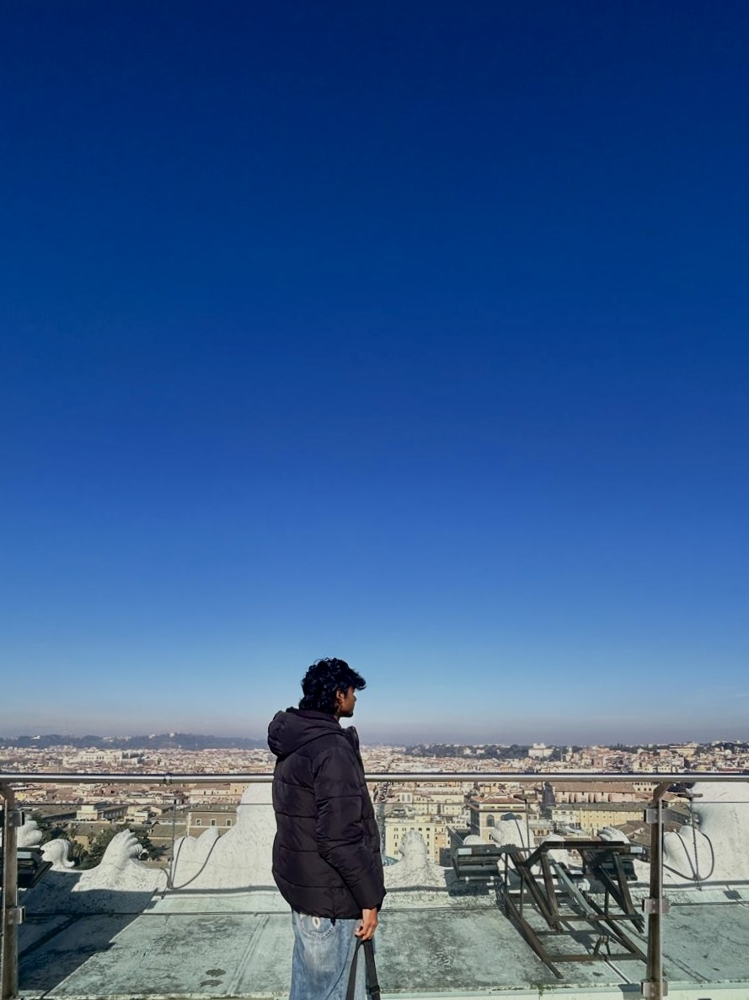
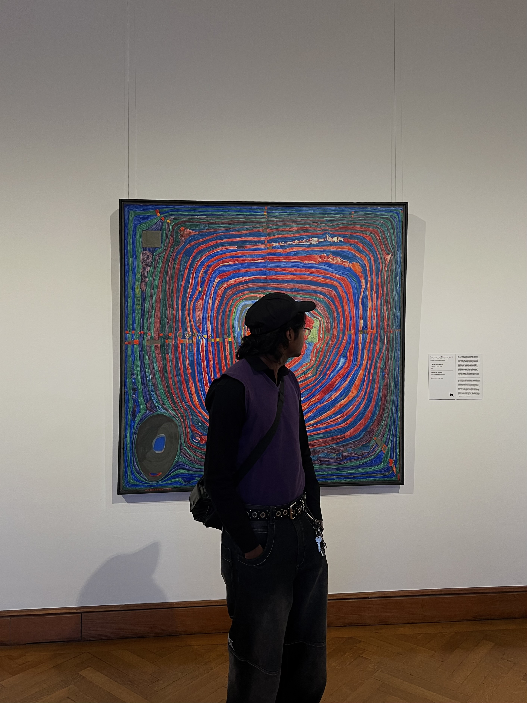

Questa è la homepage del mio sito
Ho creato il sito utilizzando i linguaggi html e css (interno) senza l'aiuto dell'intelligenza artificiale
| Sono un ragazzo di 19 anni che sta per completare un importante percorso, la scuola superiore di secondo grado. Nel futuro, a breve, dovrò affrontare un nuovo percorso altrettanto importante, che mi aiuterà a raggiungere i miei obiettivi, le mie aspirazioni ed i miei sogni. |
 |
|
Per descrivermi al meglio potremmo utilizzare 3 parole:
|
|
| Mi ritengo molto soddisfatto rispetto a questo percorso, nonostante ci siano stati alti e bassi. Sono un po triste ma allo stesso tempo sono molto emozionato di finire questo capitolo della mia vita. |
 |